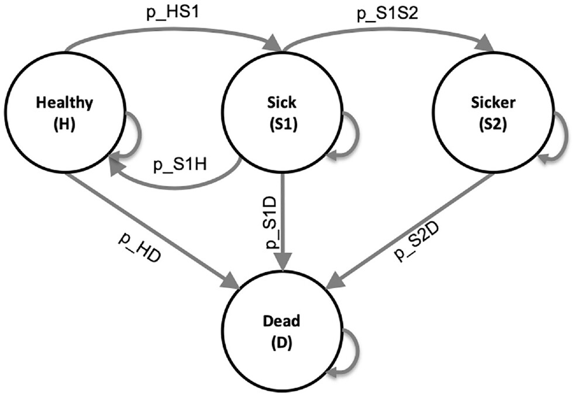
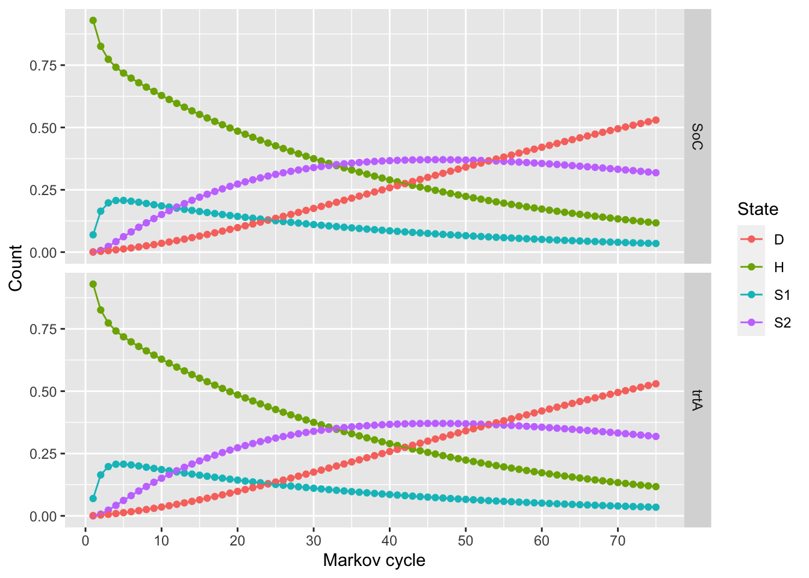

A disease has four health states, healthy, sick, sicker, and death. In this model, we simulate a hypothetical cohort of 25-y-olds in the "Healthy" state (denoted "H") until they reach a maximum age of 100 y. We will simulate the cohort dynamics in annual cycle lengths, requiring a total of 75 one-year cycles.
Healthy individuals are at risk of developing the disease when they transition to the "Sick" state (denoted by "S1") with an annual rate of 15 ‘sick’ cases per 100 patient years (r_HS1). Sick individuals are at risk of further progressing to a more severe disease stage, the "sicker" health state (denoted by "S2") with an annual rate of 105 ‘sicker’ cases per 1000 ‘sick’ patient years(r_S1S2). Individuals in S1 can recover and return to H, at a rate of 1 patient recovering for every 2 patients spending a year in the ‘sick’ state (p_S1H). However, once individuals reach S2, they cannot recover to either the sick (S1) or healthy (H) states. Healthy individuals (those in H) face a constant background mortality (p_HD) due to other causes of death of 0.002 per patient-year. Individuals in S1 and S2 face an increased hazard of death, compared with healthy individuals, in the form of an HR of 3 and 10, respectively, relative to the background mortality rate.
Individuals in S1 experience health care costs of $4,000 per year compared to $2,000 per year for healthy individuals. Those in S2 experience annual health care costs of $15,000. The utility for the healthy state is 1, for the sick state it is 0.75, for the sicker state it is 0.5, and for the death state it is 0. When individuals die, they transition to the absorbing "Dead" state (denoted by "D"). We discount both costs and QALYs at an annual rate of 3%.
We are interested in evaluating the cost-effectiveness of strategies: the standard of care (strategy SoC) and treatment A. Treatment A that increases the QoL of individuals in S1 from 0.75 (utility without treatment, u_S1) to 0.95 (utility with treatment A, u_trtA). Treatment A costs $12,000 per year (c_trtA). We assume that it is not possible to distinguish between Sick and Sicker patients; therefore, individuals in both disease states receive the treatment. This strategy does not affect the QoL of individuals in S2, nor does it change the risk of becoming sick or progressing through the sick states.
Calculate the incremental cost per QALY gained.
Sick-sicker model schematic:

Modeling
First we’ll load some helpful packages.
# Note the packages must first be installed with:# install.packages("tidyverse")# install.packages("heemod")library(tidyverse)
── Attaching core tidyverse packages ──────────────────────── tidyverse 2.0.0 ──
✔ dplyr 1.1.2 ✔ readr 2.1.4
✔ forcats 1.0.0 ✔ stringr 1.5.0
✔ ggplot2 3.4.2 ✔ tibble 3.2.1
✔ lubridate 1.9.2 ✔ tidyr 1.3.0
✔ purrr 1.0.1
── Conflicts ────────────────────────────────────────── tidyverse_conflicts() ──
✖ dplyr::filter() masks stats::filter()
✖ dplyr::lag() masks stats::lag()
ℹ Use the conflicted package (<http://conflicted.r-lib.org/>) to force all conflicts to become errors
library(heemod)
Warning: package 'heemod' was built under R version 4.3.3
Attaching package: 'heemod'
The following object is masked from 'package:purrr':
modify
Defining parameters
First, define parameters based on the model description.
## Transition probabilities (annual), and hazard ratios (HRs)r_HD <-0.002# annual rate of dying when Healthy (all-cause mortality rate)r_HS1 <-0.15# annual rate of becoming Sick when Healthyr_S1H <-0.5# annual rate of becoming Healthy when Sickr_S1S2 <-0.105# annual rate of becoming Sicker when Sickhr_S1 <-3# hazard ratio of death in Sick vs Healthyhr_S2 <-10# hazard ratio of death in Sicker vs Healthy# compute mortality ratesr_S1D <- r_HD * hr_S1 # annual mortality rate in the Sick stater_S2D <- r_HD * hr_S2 # annual mortality rate in the Sicker state
Then we can transform all rates to probabilities by scaling by the cycle length (1 year).
# Note: heemod also has helper functions for transformations, but for now we'll apply the formulas you learned in class# e.g. p_HS1 <- rate_to_prob(r=r_HS1, per=cycle_length)cycle_length <-1## Transitions between statesp_HS1 <-1-exp(-r_HS1 * cycle_length) # transition probability of becoming Sick when Healthyp_S1H <-1-exp(-r_S1H * cycle_length) # transition probability of becoming Healthy when Sickp_S1S2 <-1-exp(-r_S1S2 * cycle_length) # transition probability of becoming Sicker when Sick### Transitions to deathp_HD <-1-exp(-r_HD * cycle_length) # annual background mortality risk (i.e., probability)p_S1D <-1-exp(-r_S1D * cycle_length) # annual probability of dying when Sickp_S2D <-1-exp(-r_S2D * cycle_length) # annual probability of dying when Sicker
Now we put all the parameters we’ve defined and some global parameters into the form that heemod wants them in:
param <-define_parameters(# global parametersage_init =25, # starting ager_discount =0.03, # discount rate for costs and QALYs# transtion probabilitiesp_HS1 = p_HS1,p_S1H = p_S1H,p_S1S2 = p_S1S2,p_HD = p_HD,p_S1D = p_S1D,p_S2D = p_S2D,## State rewards## Costsc_H =2000, # annual cost of being Healthyc_S1 =4000, # annual cost of being Sickc_S2 =15000, # annual cost of being Sickerc_D =0, # annual cost of being deadc_trtA =12000, # annual cost of receiving treatment A# Utilitiesu_H =1, # annual utility of being Healthyu_S1 =0.75, # annual utility of being Sicku_S2 =0.5, # annual utility of being Sickeru_D =0, # annual utility of being deadu_trtA =0.95# annual utility when receiving treatment A)
## Standard of Care (SoC) strat_SoC <-define_strategy(transition = mat_SoC,H = state_H,S1 = state_S1,S2 = state_S2,D = state_D)## Treatment Astrat_strA <-define_strategy(transition = mat_strA,H = state_H_strA,S1 = state_S1_strA,S2 = state_S2_strA,D = state_D_strA)
The initial distribution between states in model cycle 0 also needs to be defined. All patients start in the healthy state. Note that in this case we’re simulating the state transitions for only 1 patient as it simplifies results reporting, which by convention are usually reported as costs and QALYs per patient. If it’s easier you can think of the resulting markov trace as showing the proportion of patients in each state in each model cycle.
time0 <-define_init(H =1, S1 =0, S2 =0, D =0) # initial state vector
Run the model
# run for 75 model cycles (years)total_cycles <-75# model runres_mod <-run_model(init=time0,cycles = total_cycles, SoC = strat_SoC, trtA = strat_strA,parameters = param,cost = cost,effect = utility )
First let’s look at the markov trace showing the probability distribution between states for each of the 75 model cycles.
# Default heemod plot giving the proportion of patients in each model cycleplot(res_mod)

# The same information but as data frames for each strategymarkov_trace <-get_counts(res_mod) markov_trace_SoC <- markov_trace %>%rename(strategy=.strategy_names, model_cycle=model_time, state=state_names, proportion=count) %>%filter(strategy=="SoC") %>%pivot_wider(names_from=state, values_from=proportion)markov_trace_trtA <- markov_trace %>%rename(strategy=.strategy_names, model_cycle=model_time, state=state_names, proportion=count) %>%filter(strategy=="trtA") %>%pivot_wider(names_from=state, values_from=proportion)
**Question: Are there any differences between the Markov traces for each strategy? Why or why not?
Now let’s look at the costs and QALYs for each model cycle in both strategies.
**Question: Are there any differences between the cycle payoffs for each strategy? Why or why not?
Now, let’s sum the model payoffs to get total costs and QALYs for each strategy.
# Two different ways to get total costs and QALYS for each strategy# 1. Using our payoffs data: knitr::kable(cycle_payoffs_SoC %>%summarise(total_cost=sum(cost), total_QALY=sum(utility)) %>%mutate(strategy="SoC"))